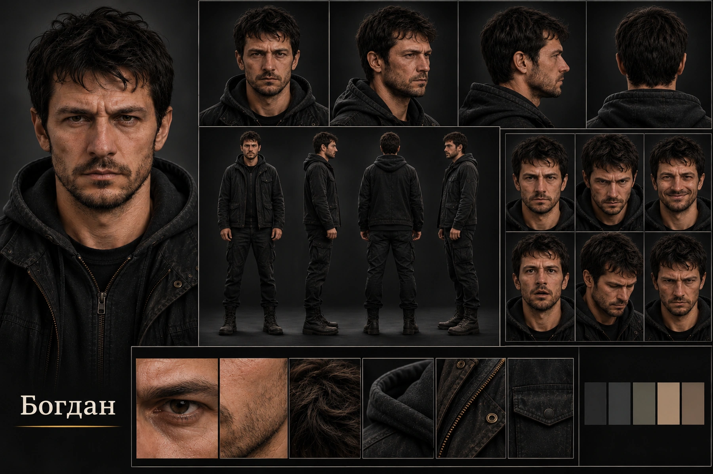

OVERVIEW
Initiations and community-building
Bohdan works in the occupied territories of Ukraine, helping people adjust after initiation and learn to use their new abilities. He stays in contact with the newly initiated through the thought-link, gathers them into groups and opens portals for their transition to the Zero Plan, where instructors are waiting for them.
Status: kharakternyk
Main role: initiation support and guidance for newly initiated people
Area of activity: occupied territories of Ukraine, including Donetsk
Abilities: opening portals and using the thought-link
Age: not specified in the reviewed passages
Appearance: based on the author's supplied character image
DONETSK · THE NEWLY INITIATED
Building a community
In Donetsk, Bohdan meets people who, after initiation, can already sense other kharakternyky through the thought-link. Among them is Serhii, whom Bohdan recognises in the gathering. He helps the group travel through a portal to the Zero Plan, where instructors welcome the newcomers, explain the basics and show them the orbital lift.
Later, Bohdan appoints Serhii and two other newly initiated people as his sotnyks. His responsibilities gradually change: he no longer only guides people through the process, but also makes organisational decisions and delegates authority.
THOUGHT-LINK · MILITARY PERSONNEL
Direct access to information
Bohdan offers soldiers bracelets that activate the thought-link. He explains that this gives them access to information without intermediaries and allows them to understand who is really directing the war. His aim is to persuade the soldiers to stop working for the Order. Serhii supports him by sharing his own experience of being connected.
In these scenes, Bohdan acts calmly and directly: rather than pressuring people with promises, he invites them to verify the information for themselves. The reviewed passages do not establish other distinct personality traits.
PROPOSAL · UNDERGROUND CITY
A base beneath Donetsk
Bohdan proposes building an underground city beneath Donetsk. He explains that the kharakternyk community in the occupied territory is growing quickly and needs a base independent of conditions on the surface. If circumstances change, it could shelter not only kharakternyky but civilians as well.
As a practical reason, Bohdan points to Donbas's mining history and its existing network of underground workings. Dmytro agrees to consider the proposal, while Lech examines the geological data and the old mine system.
RELATIONSHIPS AND STORY ROLE
Coordinator in the occupied territory
Serhii is one of the newly initiated people Bohdan works with directly; he later becomes one of Bohdan's sotnyks. Bohdan discusses the underground-base proposal with Dmytro, while Lech is brought in to assess its technical feasibility.
Bohdan combines individual support, group organisation and strategic proposals for the community's development. In the reviewed scenes, his story role is primarily connected with expanding initiations and building a network of kharakternyky in the occupied territories.